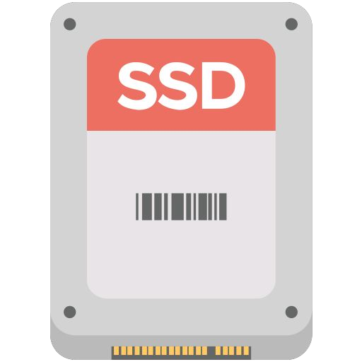
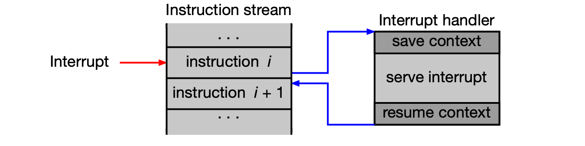
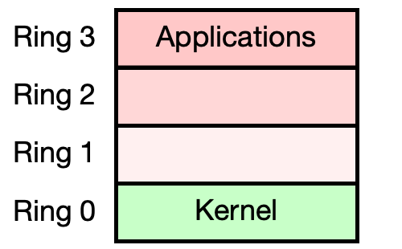

Úvod do operačních systémů¶
Tato kapitola pokládá základy pro celý předmět BI-OSY. Nejprve si popíšeme, z čeho se fyzicky skládá výpočetní systém — CPU, paměti, periferní zařízení a sběrnice. Poté si na dvou motivačních příkladech ukážeme rozdíl mezi programováním bez operačního systému a s ním. Nakonec definujeme, co operační systém vlastně je, jak je organizováno jeho jádro a jakým způsobem s ním aplikace komunikují prostřednictvím systémových volání (system calls).
Obsah stránky
Hardware: Model výpočetního systému¶
Moderní počítač není monolitické zařízení — jde o souhrn specializovaných komponent propojených základní deskou (motherboard). Ta kromě fyzického propojení obsahuje jižní můstek (south bridge / chipset) a pomocné obvody pro komunikaci s periferiemi, správu napájení a čip s firmwarem BIOS/UEFI.

CPU¶
Central processing unit (CPU) je primární procesor počítače. Implementuje konkrétní architekturu souboru instrukcí (Instruction Set Architecture, ISA), která definuje:
- množinu instrukcí a adresní režimy,
- množinu registrů, organizaci paměti a organizaci vstupu/výstupu.
Příklad: různé systémy, různé ISA
| Systém | CPU | Výrobce | ISA | OS |
|---|---|---|---|---|
| A | AMD Ryzen 3 2200G | AMD | x86-64 | Linux |
| B | Intel Core i5-8400 | Intel | x86-64 | Windows 10 |
| C | Intel Xeon E3-1225 v6 | Intel | x86-64 | Linux |
| D | Ultra SPARC T2 | Oracle | SPARC V9 | Solaris |
CPU od různých výrobců mohou implementovat stejnou ISA — proto binární program ze systému A poběží i na systému C (stejná ISA i OS). Program ze systému B naproti tomu na ostatních systémech fungovat nebude, protože se liší buď ISA, nebo OS. Pokud kód nezávisí na konkrétní ISA ani OS, lze ho přeložit pro cílovou platformu a spustit.
Přerušení a výjimky¶

Přerušení (interrupts) a výjimky (exceptions) jsou mechanismy, které umožňují CPU reagovat na události mimo normální tok instrukcí. Normální zpracování instrukčního proudu je dočasně přerušeno a spustí se obslužná rutina přerušení (Interrupt Service Routine, ISR). Celý mechanismus je definován ISA.
Vnější přerušení (external interrupts) jsou asynchronní — přicházejí z okolí CPU:
- řadič zařízení signalizuje dokončení I/O operace (např. disk dokončil čtení),
- přetečení systémového časovače (OS pak může naplánovat jiný proces),
- hardwarová chyba (např. chyba na sběrnici).
Výjimky (vnitřní přerušení) jsou synchronní — vznikají přímo při zpracování instrukce:
- vykonání instrukce systémového volání (na x86-64 to je instrukce
syscall), - softwarová chyba — dělení nulou, přetečení, výpadek stránky (page fault) apod.
U zkoušky
Rozlišení synchronní výjimky vs. asynchronního přerušení je základní pojmová dvojice. Systémové volání je synchronní výjimka — aplikace ji záměrně vyvolá instrukcí syscall.
Privilegované módy CPU¶

ISA definuje privilegované módy (privilege levels / rings) běhu CPU. Software běžící v daném módu smí:
- používat pouze instrukce povolené v tomto módu,
- modifikovat pouze povolené registry a oblasti paměti.
Pro operační systémy jsou klíčové dva základní módy:
- Kernel mód (ring 0 / EL1 / S-mode): vše je povoleno — jádro OS,
- User mód (ring 3 / EL0 / U-mode): omezený přístup — uživatelské procesy nemohou přímo manipulovat s I/O zařízeními, měnit tabulku stránek ani registrovat obslužné rutiny přerušení.
Srovnání privilegovaných módů napříč architekturami:
| Úroveň | x86-64 | RISC-V | ARM (AArch64) | Popis |
|---|---|---|---|---|
| Nejvyšší (firmware) | Ring 0 | Machine mode (M-mode) | EL3 (Secure Monitor) | Přímý přístup k HW, firmware |
| Operační systém | Ring 0 | Supervisor mode (S-mode) | EL1 (Kernel/OS) | Správa paměti, procesů, privilegované operace |
| Uživatelské aplikace | Ring 3 | User mode (U-mode) | EL0 (User Space) | Omezený přístup k prostředkům |
Poznámka k x86-64
Procesory Intel/AMD definují rings 0–3, ale ring 1 a ring 2 se v praxi nepoužívají. OS běží v ring 0, aplikace v ring 3.
Stav CPU po resetu¶
Po resetu je CPU vždy ve stavu s nejvyššími oprávněními. Nepoužívá stránkování ani virtuální paměť — adresy jsou fyzické. Vykonávání začíná od předem definované reset vektoru:
| Architektura | Reset vector | Komentář |
|---|---|---|
| x86-64 | 0xFFFFFFFF0 |
Adresa je zrcadlena do 0xFFFF0 |
| RISC-V | 0x200 (obvykle) |
Libovolná adresa dle implementace |
| ARM (AArch64) | 0x0 nebo 0xFFFF0000 |
Závisí na implementaci |
Specifika x86-64: cesta k 64-bitovému režimu
Procesor x86-64 po resetu startuje v 16-bitovém reálném režimu s 20-bitovým fyzickým adresním prostorem (díky segmentaci). Teprve poté firmware přepíná CPU do 32-bitového chráněného režimu (protected mode), kde jsou dostupné privilegované módy a stránkování. Nakonec se procesor přepíná do 64-bitového long mode, kde je k dispozici plnohodnotná 64-bitová adresace.
Pam읶
Výpočetní systém pracuje s několika typy paměti:
| Typ | Zkratka | Typická velikost | Vlastnosti |
|---|---|---|---|
| Hlavní paměť | RAM | 16–128 GB | Přímý přístup, volatile (ztrácí obsah po odpojení napájení), nachází se zde jádro OS a běžící procesy |
| Skrytá paměť (cache) | L1/L2/L3 cache | 16–64 MB | Umístěna uvnitř CPU, programátorovi „neviditelná", maskuje latenci hlavní paměti |
| Paměť pro firmware | NVRAM / Flash | 10–50 MB | Non-volatile, obsahuje firmware (BIOS, UEFI) a konfigurační proměnné HW |
Periferní zařízení a sběrnice¶
Periferní zařízení rozšiřují základní výpočetní schopnosti systému:
- Datová úložiště — sekundární paměť (HDD, SSD, RAID) pro trvalé uchování dat,
- síťové karty, grafické karty, monitory, klávesnice, myš, napájecí zdroje.
Sběrnice (bus) zajišťuje přenos dat a řídicích povelů mezi jednotlivými částmi výpočetního systému. Příklady: PCI-Express, Fibre Channel, SCSI, SATA.
Paměťový a I/O prostor¶
CPU přistupuje k zařízením dvěma různými způsoby:
Paměťový prostor (memory space): přístupný pomocí standardních paměťových instrukcí (mov na x86-64, lw/sw na RISC-V, ldr/str na ARM). Zahrnuje hlavní paměť i paměťově mapovaná I/O zařízení (memory-mapped I/O).
I/O prostor (I/O space): přístupný pouze speciálními I/O instrukcemi (in, out na x86-64). Zahrnuje zařízení mapovaná do I/O prostoru.
Příklad: výpis paměťového prostoru na Linuxu
sudo cat /proc/iomem
00000000-00000fff : Reserved
00001000-000907ff : System RAM
000a0000-000bffff : PCI Bus 0000:00
b0000000-efffffff : PCI Bus 0000:00
d0000000-dfffffff : 0000:00:02.0 // Onboard IGD
100000000-44dffffff : System RAM
241a00000-2428018c1 : Kernel code
242a00000-2432dafff : Kernel rodata
Příklad: výpis I/O prostoru na Linuxu
Čísla portů pro tradiční zařízení (klávesnice, časovač, řadič přerušení) jsou pevně daná standardy a OS je při startu nemění.Každé PCI/PCIe zařízení obsahuje BARs (Base Address Registers), které umožňují dynamickou konfiguraci — přiřazení paměťových adres nebo čísel portů. Zobrazit je lze příkazem sudo lspci -v.
Motivační příklad č. 1: Počítač bez OS¶
Abychom pochopili, co nám operační systém vlastně přináší, zkusme si nejprve naprogramovat jednoduchý program bez OS. Úkolem je na x86-64 PC bez OS vytisknout znak na monitor a poté číst znaky z klávesnice — bez jakýchkoli služeb BIOS nebo UEFI.
Jak spustit program na počítači bez OS?¶
Procesor po resetu běží v 16-bitovém reálném režimu a začíná vykonávat kód na adrese 0xFFFF0. Řadič paměti přesměruje čtení z této adresy do ROM/Flash, kde leží BIOS nebo UEFI.
BIOS/UEFI provede POST (Power-On Self Test), detekuje periferie a zahájí bootování:
- BIOS načte bootovací kód (Bootstrap code) z prvního sektoru bootovacího zařízení — tzv. boot sektor = Master Boot Record (MBR) — do paměti na adresu
0x07C00. - UEFI hledá soubor EFI v oddíle typu EFI System Partition (ESP); pokud to selže a je povolen Legacy boot, kontroluje MBR.
V obou případech je binární kód z disku nahrán do paměti a spuštěn. To je naše příležitost, jak spustit vlastní program bez OS.
Jak tisknout znaky na monitor bez OS?¶
V reálném režimu (16-bitová adresace) je adresa 0xB8000 textový VGA framebuffer grafické karty. Zápis na tuto adresu je automaticky přesměrován čipsetem na grafickou kartu. Každý znak je uložen jako 2 bajty: bajt 0 = ASCII kód znaku, bajt 1 = barva textu a pozadí.
Jak číst znaky z klávesnice bez OS?¶
Klávesnice není namapována do paměťového prostoru — přistupujeme k ní přes I/O porty pomocí instrukcí in a out. Konkrétně:
- data se čtou z portu
0x60instrukcíinb, - vrácená hodnota je scancode — kód reprezentující stisk nebo uvolnění klávesy, nikoliv ASCII znak,
- pro stisk klávesy platí, že hodnota scancodu je menší než
0x80(bit 7 = 0 znamená stisk, bit 7 = 1 znamená uvolnění).
Kód motivačního příkladu č. 1¶
#define VIDEO_MEM 0xB8000
#define KEYBOARD_DATA 0x60
#define KEYBOARD_STATUS 0x64
#define SCREEN_COLS 80
#define SCREEN_ROWS 25
static inline void putchar(int row, int col, char c);
static inline char getchar();
static inline char inb(unsigned short port);
__attribute__((naked)) void _start() {
char v;
int r=0, c=0;
putchar(r, c++, 'x'); // Vytiskni 'x' na pozici (0,0)
while (1) { // Nekonečná smyčka — OS neexistuje!
v = getchar(); // Přečti scancode
putchar(r, c++, v); // Vypiš scancode jako znak
if ( c > SCREEN_COLS ) { c=0; r++; }
if ( r > SCREEN_ROWS ) r=0;
}
}
static inline void putchar(int row, int col, char c) {
volatile short *video_mem = (short *)VIDEO_MEM;
volatile int offset = row * SCREEN_COLS + col;
video_mem[offset] = (0x02 << 8) | c;
// Bajt 1: barva textu a pozadí (zelená na černé); Bajt 0: znak
}
static inline char getchar() {
unsigned char scancode;
while (1) {
if (inb(KEYBOARD_STATUS) & 0x01){
scancode = inb(KEYBOARD_DATA);
if (scancode < 0x80) return scancode;
}
}
}
static inline char inb(unsigned short port) {
char result;
asm volatile ("inb %1, %0" : "=a"(result) : "Nd"(port));
return result;
}
Poznámky ke kódu
- Neexistuje funkce
main(). První definovaná funkce musí býtvoid _start(). Atributnakedzabrání kompilátoru vkládat prolog/epilog pro zásobník. - Všechny funkce jsou
inline, protože zásobník nebyl inicializován (registryssaspnebyly nastaveny) a nelze ho použít pro předávání parametrů. - Komunikace s klávesnicí vyžaduje inline assembler (
asm volatile).
Kompilace a spuštění¶
# Kompilace do 16-bitového binárního kódu bez knihoven
gcc -m16 -ffreestanding -nostdlib -fno-stack-protector -fno-builtin \
-fno-asynchronous-unwind-tables -fno-exceptions -fno-pic \
-fomit-frame-pointer -O1 program.c -o boot.bin -Wl,--oformat=binary
# Rozšíření na 510 bajtů (sektor má 512 B)
dd if=/dev/zero bs=1 count=$((510-$(stat -c%s boot.bin))) >> boot.bin
# Přidání bootovací signatury 0xAA55
echo -ne '\x55\xAA' >> boot.bin
# Test v emulátoru
qemu-system-x86_64 -drive format=raw,file=boot.bin
Bootovací signatura
BIOS rozpozná boot sektor tak, že na offsetech 510–511 (poslední 2 bajty sektoru) najde hodnoty 0x55 0xAA. Proto musíme výsledný binární soubor na přesně 512 bajtů doplnit nulami a signaturu přidat.
UEFI bez CSM
Na moderních systémech s UEFI bez režimu kompatibility s BIOSem (CSM) nemusí být textový VGA framebuffer na adrese 0xB8000 dostupný. V takovém případě je nutné najít adresu framebufferu z BARs grafické karty (obvykle zařízení 00:02.0 na PCIe) nebo využít UEFI Graphics Output Protocol (GOP).
Sumarizace motivačního příkladu č. 1¶
Bez OS musí programátor řešit vše sám:
- Pracuje přímo s fyzickou pamětí, zná konkrétní adresy VGA bufferu i čísla I/O portů.
- Musí znát interpretaci dat na daných adresách (formát VGA záznamu, formát scancodu).
- Kód není přenositelný — závisí na konkrétní architektuře (x86-64) a hardwarových konvencích.
- Chybí převod scancodu na ASCII, rolování obrazovky a jakákoli abstrakce HW.
Motivační příklad č. 2: Počítač s OS¶
Stejný úkol — ale nyní se zavedeným OS a standardní knihovnou jazyka C:
#include <stdio.h>
int main() {
char c;
putchar('x'); // Vytiskni 'x'
while (1) { // Nekonečná smyčka
c = getchar(); // Přečti ASCII znak
putchar(c); // Vytiskni ASCII znak
}
return 0;
}
Program je přenositelný — funguje na libovolné architektuře se zavedeným OS a standardní knihovnou C. Programátor neví nic o fyzických adresách VGA paměti, I/O portech ani scancodeech. Veškerou komunikaci s hardwarem za něj zajistí OS prostřednictvím systémových volání.
Software: Model výpočetního systému¶
Softwarové vrstvy moderního výpočetního systému lze znázornit takto (od nejnižší po nejvyšší):
| Vrstva | Komponenty |
|---|---|
| Hardware | CPU, NVRAM, RAM, sběrnice, HDD, SSD, GPU, NIC, … |
| Firmware | BIOS/UEFI, SMC, … |
| OS — jádro | Kernel (vč. ISR) + moduly |
| Knihovny | libc, pthreads, … |
| Aplikace | GNU nástroje, GNOME, jiné aplikace |
| Uživatelé | root, sys, user1, … |
Klíčová rozhraní:
- ISA (Instruction Set Architecture) — rozhraní mezi HW a SW (dělí se na System ISA pro jádro a User ISA pro aplikace).
- ABI (Application Binary Interface) — rozhraní mezi aplikacemi a jádrem OS, implementováno systémovými voláními.
- API (Application Programming Interface) — rozhraní mezi aplikacemi a knihovnami (volání knihovních funkcí).
U zkoušky
Pamatujte si, že ABI = systémová volání a API = knihovní funkce. Aplikace volají knihovní funkce (API), které interně volají jádro OS přes ABI (systémová volání).
Operační systém¶
Definice a úkoly¶
Operační systém (OS) je základní software fungující jako prostředník mezi hardwarem a aplikacemi/uživateli.
Hlavní úkoly OS:
- Správa a sdílení výpočetních prostředků:
- fyzických: procesor, paměť, disky, …
- logických: uživatelská konta, procesy, soubory, přístupová práva, …
- Poskytuje rozhraní (abstrakce složitosti HW):
- aplikacím: Win32 API, Win64 API, systémová volání Unixu, …
- uživatelům: CLI (příkazová řádka) a GUI (grafické prostředí)
Zaměření předmětu BI-OSY
Předmět se zaměřuje na principy univerzálních OS: MS Windows, OS unixového typu (Linux, Solaris, MacOS, BSD,...), VMS a další. Konkrétně na problematiku správy procesů a vláken, synchronizace, meziprocesové komunikace, správy paměti, správy datových úložišť a systémů souborů.
Jádro OS a jeho součásti¶
OS jako celek tvoří dvě skupiny:
Jádro OS (kernel) implementuje:
- Správu I/O (přerušení, ovladače, …)
- Správu procesů a vláken (vytváření, plánování, …)
- Správu prostředků pro synchronizaci a meziprocesovou komunikaci
- Správu paměti (alokace/dealokace, překlad adres, …)
- Správu datových úložišť (RAID, HDD, SSD, USB flash, …)
- Správu systému souborů
- Správu síťové infrastruktury (síťová rozhraní, IP stack, …)
Aplikace součástí OS (běží v user módu) implementují:
- CLI (např. GNU nástroje, PowerShell)
- GUI (např. X11, GNOME, KDE)
- správu SW (instalace aplikací)
- správu uživatelů
- démony (daemons) — služby běžící na pozadí, reagující na události (např. připojení USB) nebo požadavky jiných procesů, komunikující s jádrem přes systémová volání.
Architektura jádra OS¶
Jádro OS se typicky skládá z těchto subsystémů:
User applications / libraries
|
System call interface
┌───────────────────┼──────────────────┐
│ Process mgmt Memory mgmt I/O subsystem │
│ - tvorba/ukončení - virtual memory - VFS │
│ - plánování - page replacement - FS │
│ - IPC/signály - kernel alloc - device drivers │
│ │
│ Interrupt service routines (ISR) │
└────────────────────────────────────────────┘
|
Hardware
Vlastnosti moderních OS¶
| Vlastnost | Popis |
|---|---|
| Multitasking (víceúlohový) | Běh více procesů se sdílením času CPU, ochrana paměti |
| Multithreading (vícevláknový) | Proces se skládá z vláken; OS plánuje vlákna, ne jen procesy |
| Multi-user (víceuživatelský) | Současná práce více uživatelů, vzájemná ochrana a identifikace |
| SMP (symetrický multiprocesor) | Vlákna jádra i aplikací lze plánovat na různá jádra CPU |
| Přenositelnost | ~90 % jádra napsáno v jazyce C, přenositelné mezi platformami |
| Licencování | Různé podmínky (open source, proprietární, copyleft, …) |
OS a různé typy výpočetních systémů¶
| Typ zařízení | Typické OS |
|---|---|
| Vestavěná zařízení | Linux, proprietární OS |
| Chytrá zařízení | Android, iOS, watchOS, tvOS |
| Stolní počítače, notebooky | MS Windows, macOS, Linux, ChromeOS |
| Servery | Linux, Solaris, HP-UX, AIX, MS Windows |
| Superpočítače | Linux, proprietární OS |
Tržní podíly OS (2024)
| Kategorie | 1. místo | 2. místo | 3. místo |
|---|---|---|---|
| Desktop PC | MS Windows (73 %) | macOS (14 %) | Linux (4 %) |
| Smartphone | Android (74 %) | iOS (26 %) | ostatní |
| Smart TV | Tizen (13 %) | VIDAA (8 %) | WebOS (7 %) |
Uživatelé výpočetního systému¶
Z hlediska způsobu používání rozlišujeme tři kategorie uživatelů:
- Uživatel — běžný (přístup přes GUI, minimální znalosti OS) nebo pokročilý (CLI, skripty, API).
- Správce — systémový (instalace, konfigurace HW a OS) nebo aplikační (správa konkrétních aplikací).
- Vývojář — systémový (vyvíjí jádro, ovladače) nebo aplikační (vyvíjí aplikace).
OS z pohledu programátora: Systémová volání¶
Co OS programátorům nabízí?¶
OS poskytuje programátorům ABI (Application Binary Interface) implementované prostřednictvím systémových volání (syscalls). Pro Linux na x86-64 platí tato konvence:
- Číslo systémového volání se uloží do registru
rax. - Argumenty se předávají v registrech
rdi,rsi,rdx,r10,r8,r9. - Systémové volání se vyvolá instrukcí
syscall.
Výběr systémových volání Linux x86-64
| rax | Syscall | Arg1 (rdi) | Arg2 (rsi) | Arg3 (rdx) |
|---|---|---|---|---|
| 0 | read |
fd | buf | count |
| 1 | write |
fd | buf | count |
| 2 | open |
pathname | flags | mode |
| 3 | close |
fd | — | — |
| 9 | mmap |
addr | length | prot |
| 57 | fork |
— | — | — |
| 60 | exit |
status | — | — |
| 62 | kill |
pid | sig | — |
K dispozici jsou stovky systémových volání. Nad nimi jsou postaveny knihovní funkce.
U zkoušky
OS neposkytuje funkce jako printf — ty jsou součástí knihovny (libc). OS poskytuje pouze systémová volání, jako je write. Knihovní funkce jsou tenká nadstavba nad systémovými voláními.
Příklad: nepřímé volání systémového volání (přes knihovní funkce)¶
Tři ekvivalentní způsoby, jak vypsat řetězec v Linuxu:
#include <stdio.h>
#include <unistd.h>
#include <sys/syscall.h>
char msg[14] = "Hello world!\n";
int main(){
printf("%s", msg); // 1. Knihovní funkce (formátovaný výstup)
write(STDOUT_FILENO, msg, 13); // 2. Přímá obálka systémového volání
syscall(__NR_write, STDOUT_FILENO, msg, 13); // 3. Explicitní volání přes syscall()
return 0;
}
Porovnání přístupů:
printf()— sama sestaví výstupní řetězec a spočítá délku; nabízí formátovaný výstup.write()— délku musíme zadat ručně; konstantaSTDOUT_FILENO(hodnota 1) označuje standardní výstup (definováno standardem POSIX).syscall(__NR_write, ...)— ukázka, jak volat systémové volání, pokud neexistuje odpovídající knihovní funkce;__NR_writemá pro Linux x86-64 hodnotu 1.
Pojmenování
Většina systémových volání má svůj ekvivalent v podobě knihovní funkce se stejným názvem (např. write, read, open). To může být matoucí — jde o dvě různé věci: funkce v libc a samotné systémové volání jádra.
Příklad: přímé volání systémového volání (assembler)¶
section .rodata
msg: db "Hello world!", 10
global _start
section .text
_start:
mov rax, 1 ; číslo syscall: write (__NR_write)
mov rdi, 1 ; STDOUT_FILENO
mov rsi, msg ; ukazatel na zprávu
mov rdx, 13 ; délka zprávy (13 znaků)
syscall ; <- volání OS, přechod do kernel módu
mov rax, 60 ; číslo syscall: exit (__NR_exit)
mov rdi, 0 ; EXIT_SUCCESS
syscall ; <- volání OS
Sestavení a linkování:
Co se stane při vykonání instrukce syscall:
- CPU přepne do kernel módu (ring 0).
- Spustí se obslužná rutina v jádře OS.
- OS z registru
raxpozná číslo požadované služby. - OS ověří oprávnění a vykoná požadovanou operaci (nebo ji zamítne a ukončí proces).
Shrnutí mechanismu systémového volání¶
U zkoušky
Toto je nejdůležitější část přednášky. Systémové volání je jediný způsob, jak uživatelský proces může legálně komunikovat s jádrem OS.
Aplikace:
- běží v user módu CPU — nemůže přímo přistupovat k prostředkům systému,
- pokud chce využít prostředek (soubor, síť, paměť, …), musí požádat jádro OS systémovým voláním.
Mechanismus (na příkladu write):
- Aplikace zavolá knihovní funkci
write(fd, buf, N). - Funkce uloží parametry do registrů dle ABI konvence (rax = číslo syscall, rdi = fd, rsi = buf, rdx = N).
- Vyvolá výjimku instrukcí
syscall→ CPU přepne do kernel módu a spustí obsluhu v jádře. - Jádro OS ověří přístupová práva a pokusí se zapsat N bajtů.
- Vrátí výsledek a CPU se přepne zpět do user módu.
Kvíz: kdy jádro OS běží?¶
Na základě všeho výše popsaného platí správná odpověď:
U zkoušky
Jádro OS běží při spuštění počítače (inicializace) a poté pouze při obsluze přerušení — tedy výhradně tehdy, kdy nastane:
- systémové volání (synchronní výjimka instrukcí syscall),
- přetečení časovače (vnější přerušení — viz plánování vláken),
- výpadek stránky (výjimka — viz virtuální paměť),
- jiné přerušení od periferie nebo HW/SW chyba.
Jádro OS neběží nepřetržitě na pozadí a aktivně nemonitoruje procesy. Nespouští se ani po každém volání knihovní funkce — většina knihovních funkcí systémové volání nevyvolá.
Po inicializaci (vytvoření stránkovacích tabulek, nastavení přerušení, připojení kořenového FS) OS přepne do user módu a spustí první proces — v Linuxu je to systemd (process init). Od té chvíle OS zasahuje výhradně jako reakce na přerušení.
Shrnutí¶
- Výpočetní systém tvoří CPU (s ISA a privilegovanými módy), RAM, NVRAM a periferní zařízení propojená základní deskou.
- CPU definuje dva klíčové privilegované módy: kernel mód (vše povoleno) a user mód (omezený přístup).
- Vnější přerušení jsou asynchronní (od HW); výjimky jsou synchronní (vznikají při vykonávání instrukce).
- Bez OS musí programátor znát fyzické adresy VGA bufferu, I/O porty a formáty dat — kód není přenositelný.
- S OS programátor pracuje přes abstrakce (soubory, procesy, sockety); přenositelnost zajistí standardní ABI.
- Operační systém je prostředník mezi HW a aplikacemi — spravuje prostředky a poskytuje rozhraní.
- Systémové volání je jediný způsob, jak user mód může požádat jádro OS o privilegovanou operaci.
- Na x86-64/Linux se syscall vyvolá instrukcí
syscall; číslo služby je vrax, argumenty vrdi,rsi,rdx, … - Jádro OS neběží nepřetržitě — spouští se pouze při přerušeních (syscall, časovač, výpadek stránky, HW přerušení).
- Moderní OS jsou multitaskingové, víceuživatelské, vícevláknové a přenositelné (~90 % v jazyce C).
Klíčové pojmy¶
- CPU (Central Processing Unit) — primární procesor počítače, implementuje ISA.
- ISA (Instruction Set Architecture) — architektura souboru instrukcí definující instrukce, registry a organizaci paměti/I/O.
- Kernel mód — privilegovaný režim CPU, v němž běží jádro OS; vše je povoleno.
- User mód — omezený režim CPU pro uživatelské procesy; přímý přístup k I/O ani ke správě paměti není povolen.
- Ring 0 — nejvyšší privilegovaný stupeň v x86-64 (= kernel mód).
- Ring 3 — nejnižší privilegovaný stupeň v x86-64 (= user mód pro aplikace).
- Přerušení (interrupt) — asynchronní reakce CPU na vnější událost (I/O dokončení, přetečení časovače, HW chyba).
- Výjimka (exception) — synchronní přerušení vzniklé při zpracování instrukce (syscall, dělení nulou, výpadek stránky).
- Reset vector — předem definovaná fyzická adresa, od níž CPU po resetu začíná vykonávat kód.
- Real mode (reálný 16-bitový režim) — počáteční režim x86-64 po resetu; 20-bitový fyzický adresní prostor.
- Protected mode (chráněný 32-bitový režim) — umožňuje privilegované módy, stránkování a virtuální paměť.
- Long mode (64-bitový režim) — plnohodnotný 64-bitový mód procesoru x86-64.
- RAM (Random-Access Memory) — hlavní operační paměť; volatile, obsahuje jádro OS a běžící procesy.
- Cache — skrytá paměť uvnitř CPU (L1/L2/L3); maskuje latenci hlavní paměti.
- NVRAM / Flash — non-volatile paměť pro firmware (BIOS, UEFI) a konfiguraci HW.
- BIOS (Basic Input-Output System) — firmware pro inicializaci HW a bootování; starší standard.
- UEFI (Unified Extensible Firmware Interface) — moderní náhrada BIOSu s rozšířenými možnostmi.
- Boot sektor (MBR) — první sektor bootovacího zařízení (512 B); obsahuje bootstrap kód a podpisový bajt
0xAA55. - Bootovací signatura — hodnoty
0x55 0xAAna offsetech 510–511 boot sektoru, podle nichž BIOS rozpozná bootovatelné médium. - Sběrnice (bus) — přenosové médium pro data a řídicí povely mezi částmi systému (PCIe, SATA, USB).
- Memory-mapped I/O — přístup k I/O zařízením přes paměťový adresní prostor (instrukce
mov,ldr, …). - I/O prostor (port-mapped I/O) — přístup k I/O zařízením přes speciální instrukce (
in,outna x86-64). - BARs (Base Address Registers) — registry PCI/PCIe zařízení umožňující dynamické přiřazení adres a portů.
- Scancode — kód vrácený klávesnicí (port
0x60), reprezentující stisk nebo uvolnění klávesy; není to ASCII. - VGA framebuffer — textový video buffer grafické karty dostupný na adrese
0xB8000v reálném režimu. - Operační systém (OS) — základní software, prostředník mezi HW a aplikacemi; spravuje prostředky a poskytuje rozhraní.
- Jádro OS (kernel) — část OS běžící v kernel módu; implementuje správu I/O, procesů, paměti, FS a sítě.
- Démon (daemon) — systémová služba běžící v user módu na pozadí, komunikující s jádrem přes syscalls.
- ISA (SW) — rozhraní mezi HW a SW; dělí se na System ISA (pro kernel) a User ISA (pro aplikace).
- ABI (Application Binary Interface) — binární rozhraní mezi aplikacemi a jádrem OS; implementováno syscalls.
- API (Application Programming Interface) — rozhraní mezi aplikacemi a knihovnami; volání knihovních funkcí.
- CLI (Command Line Interface) — textové uživatelské rozhraní (příkazová řádka).
- GUI (Graphical User Interface) — grafické uživatelské rozhraní.
- Systémové volání (syscall) — mechanismus, jímž uživatelský proces žádá jádro OS o privilegovanou operaci; na x86-64 instrukce
syscall, číslo služby vrax. - libc (glibc) — standardní knihovna jazyka C; obsahuje obálky systémových volání (
write,read, …) i vyšší funkce (printf,malloc, …). - POSIX — standard definující přenositelné rozhraní unixových OS (čísla file descriptorů, názvy syscalls, …).
- Multitasking — schopnost OS spouštět více procesů zdánlivě současně prostřednictvím sdílení času CPU.
- Multithreading — schopnost procesu obsahovat více souběžně plánovaných vláken.
- SMP (Symmetric Multi-Processing) — podpora více CPU jader, na nichž OS plánuje vlákna paralelně.
- ISR (Interrupt Service Routine) — obslužná rutina přerušení/výjimky vykonávaná jádrem OS v kernel módu.
- Výpadek stránky (page fault) — výjimka vzniklá přístupem na virtuální adresu, k níž není namapována fyzická stránka; řeší ji správa paměti v jádře.
- strace — linuxový nástroj pro sledování systémových volání volaných z procesu (
strace date). - truss — solarisový ekvivalent
strace.